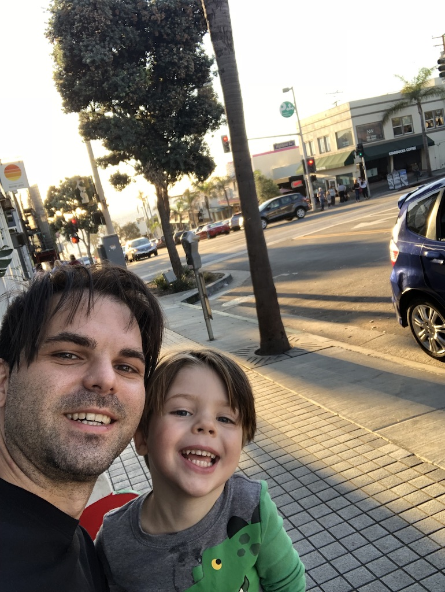

Hey welcome to my homepage, my name is Corrado. I am 32 years old, from Rome, Italy.
The guy you see next to me in the picture is Tristan, my son.
Tristan and I have a lot in common, we like outdoors sports, travelling, love the ocean, riding bikes and playing soccer. Our favourite team is Lazio!
..... oh and almost forgot we love travelling around California looking for renaissance fairs... we kill it!!
I grew up in two major cities, Rome and London. Lived in Paris for a while and now I call myself an Angeleno.
I am very very very new in the computer science industry and i really like it. Anyway this is my first real project, a web page about myself.
Why don't you check it out and tell me what you think. In the contact tab there is a form, feel free to shoot some feedback there!!
Thanks for visiting!!!